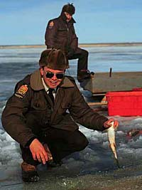
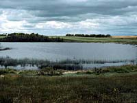

Who are commercial fishermen and how can I become one?In most cases, there are communities on lakes with major fisheries, and licenses are only issued to local residents. Fishermen are generally members of local Fishermen's co-ops and the co-ops designate eligibility requirements. By department policy, eligibility recommendations of local fishermen's co-ops are taken into consideration when issuing licenses. |
How may I obtain a license and what is the cost to me?Commercial fishermen can obtain access to the fish resource for cost of $10 per 1000m of gill net. A separate license is required for each water body fished, in the case of the fishermen who fish several lakes. License fees have not been raised in 15 years. About 2000 licenses are issued each year. |
How many others are doing the same job (competition)?
About 700 northern commercial fishermen obtain licenses each year. In addition, they employ about 1500 helpers. Most northern fishermen are of aboriginal ancestry and fish in lakes close to their place of residence. All are members of commercial fishermen's cooperatives, which work with the Department of Environment and Resource Management to set opening dates for fishing and eligibility requirements for principal lakes in their respective areas. The individual co-ops are members of a larger umbrella organization, the Saskatchewan Commercial Fishermen's Co-operative Federation, Ltd (SCFCFL). In addition to the northern commercial fishery, there are several lakes south of 54o which support commercial whitefish fisheries. There is no gamefish harvest allowed, and any gamefish incidentally caught are collected by Conservation Officers for distribution to non-profit groups. Examples of such fisheries are Last Mountain Lake, Lake Lenore, and Jackfish Lake. Most fishermen on these lakes are local farmers; fishing takes place in early winter and all or most of the catch is sold locally. There are also a couple of transition fisheries, e.g. Candle Lake and Cold Lake, which are whitefish fisheries with small gamefish tolerances. |
Where would I fish?The main commercial fishing effort takes place in lakes north of latitude 54o. Around 50 lakes produce the majority of harvested fish and another 150 - 200 smaller lakes produce the rest. There are very few 'new' lakes available. Most lakes have been fished by the same fishermen or groups of fishermen for many years, and eligibility for licensing is restricted to the fishermen of record. |
What equipment is required?Depending on the time of year fishing occurs helps determine the equipment required. Winter fishing is demanding and hazardous, with air temperatures often falling to -30 or -40 degrees Celsius. Most fishermen operate with snowmobiles and insulated sleighs. Big producers are often equipped with Bombardiers (tracked vehicles) which are old, in need of repairs, and very expensive. A 50 year-old Bombardier is worth $10,000 - $15,000. Required equipment for winter fishing are ice chisels, needle bars (ice chisels are sharpened to a needle point rather than to a chisel blade), power augers, and devices called jiggers which are used to set nets under the ice. Most items are under $100 but collectively they amount to a substantial investment. |
In addition to fishing equipment, fishermen require access to larger machinery like trucks - to haul fish to packing plant and insulated sleighs to keep fish from freezing (fresh fish are worth more). Most fish are less active in the winter than in the summer and as a result catches are lower. In addition, lifting nets in the winter is more complicated and time consuming, so fewer can be lifted each day. Summer fishing requires ice for storage once fish are removed from nets. Traditionally, fishermen prepare for summer fishing operations by filling ice houses with block ice the previous winter. In some fisheries, this is done with other fishermen. In others, a contractor is paid to fill the ice house and the cost is charged to the fishermen the following summer on a basis of so many cents/kg fish delivered (2 - 5 cents /kg average cost). |
Harvested fish can be carried by aircraft to other distribution points. However, rising costs to transport commercial fish have influenced the type of fishing operation. Many summer operations have become winter ones because of the difficulty in transport in the summer (economics). Fish quality is higher in the winter due to oxygen depletions in the summer (higher water temps). 'Stressed' fish are of poorer quality than those living in low-oxygenated water. |